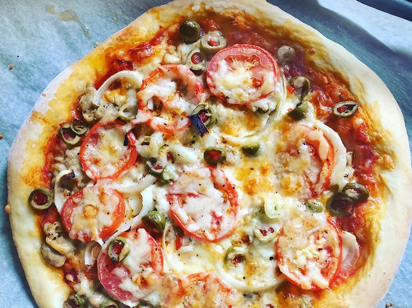

Easy Home

All Recipes Community Tips and Prais
"This crust 'makes' my pizza," says Kandi Brooks. "I sprink a bit of Parmesan cheese and Italian seasoning on the top before adding the pizza sauce. It's quick and simple and delicious!"
"Super quick and very easy," according to Lin Snow. "The first pizza crust I've ever made and I was surprised at how well it turned out! We didn't have apizza pan, so we used a baking sheet. The dough was nice and chewy with a crisp crust."
"this crust is fast, easy, and good! It made my first try at pizza making a breeze," raves Leslie A. "My fiancé was so surprised, as I! we decided to make our own pizza from now on. Ican't belive it's SO easy!"
Ingredients
- 1 cup warm(110 degrees F/45 degrees C)
- 1 (.25 ounce) packge active dry yeast
- 1 teaspoon white sugar
- 2 ½ cups bread flour
- 1 teasoon salt
Directions
- Gather all ingredients. Preheat oven to 450 degrees F(230 degrees C), and lightly grease a pizza pan.
- Place warm water in a bowl; add yeast and sugar. mix and let stand until creamy about 10 minutes.
- Add flour, oil, and salt to the yeast mixture; beat until smooth. You can do this by hand or use a stand mixer fitted with a dough hook to make it easier.
- Let rest for 5 minutes
- Turn dough out onto a lightly flourder surface and pat or roll a 12-inch circle.
- Transfer the preperded pizza pan.
- Spread crust with sauce and toppings of your choice.
- Bake in the preheated oven until golden brown, 15 to 20 minutes. Remove from the oven and let cool for 5 minutes before serving.
Home